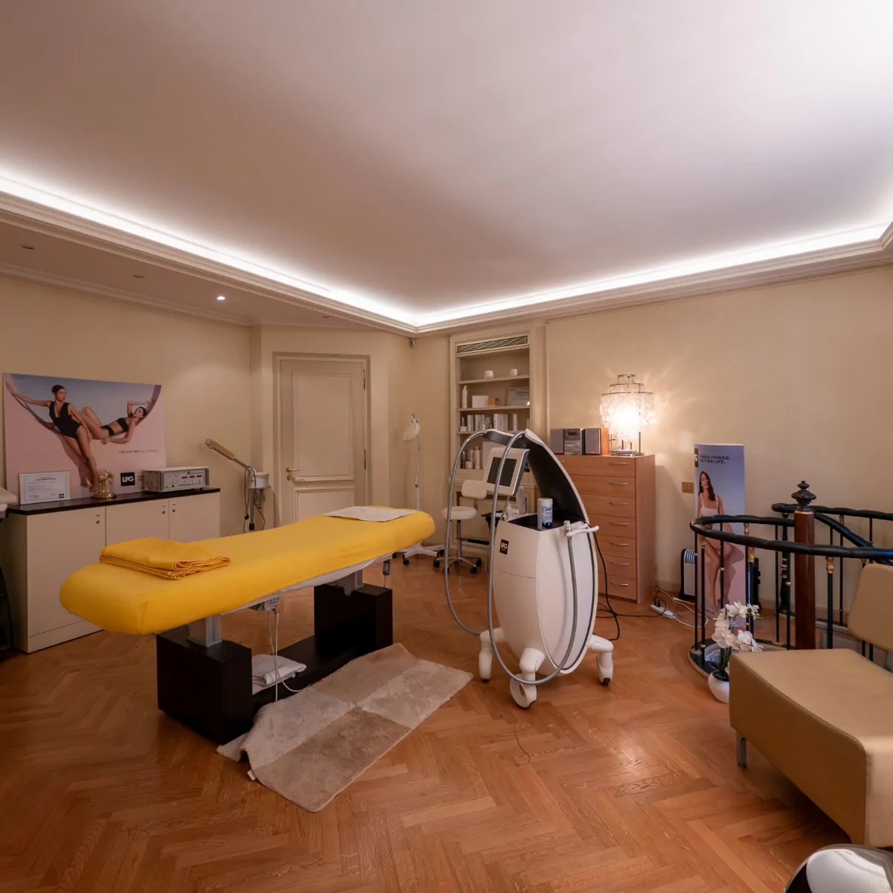

Évaluation personnalisée
Chaque accompagnement commence par un échange et une évaluation de vos besoins afin de définir le soin le plus adapté.
Chaque accompagnement commence par une écoute attentive et une évaluation individuelle, afin de choisir le soin le plus adapté à votre santé, à vos besoins et à votre rythme.

Grâce à mon expérience en soins infirmiers, en thérapies manuelles et en LPG Endermologie® Cellu M6 Alliance, je propose une prise en charge globale fondée sur des connaissances médicales, des techniques reconnues et une approche centrée sur chaque patient.
Mon objectif est de proposer des soins qui peuvent contribuer à la prévention, à la récupération, au soulagement de certaines tensions et au confort circulatoire, selon votre situation et l’évaluation réalisée.
Chaque soin est réalisé avec professionnalisme, douceur et attention, dans le respect des recommandations médicales, des bonnes pratiques et de votre rythme.
Du premier échange au suivi, chaque étape est pensée pour proposer un accompagnement cohérent, professionnel et personnalisé.
Chaque accompagnement commence par un échange et une évaluation de vos besoins afin de définir le soin le plus adapté.
Les soins tiennent compte de votre état de santé, de vos symptômes, de vos objectifs et, si nécessaire, des recommandations de votre médecin.
Les prestations sont réalisées par une infirmière et lymphothérapeute diplômée, agréée ASCA et titulaire du label de qualité RME.
La durée, la fréquence et les techniques utilisées sont adaptées à chaque personne et à son évolution.
Une démarche claire permet de comprendre votre demande, de définir la prise en charge et de l’ajuster à votre évolution.
Nous prenons le temps d’écouter votre demande, vos besoins et vos objectifs, ainsi que les recommandations médicales utiles.
Votre état de santé, vos symptômes et vos attentes sont évalués pour choisir le soin ou le programme approprié.
Chaque séance est ajustée à votre évolution et peut être complétée par des conseils personnalisés.

Un premier échange permet de vous orienter vers le soin ou le programme le plus adapté.